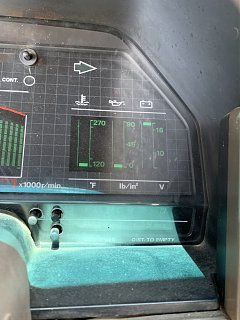
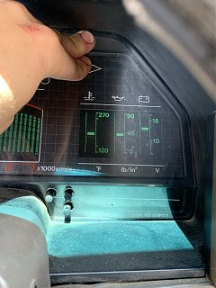
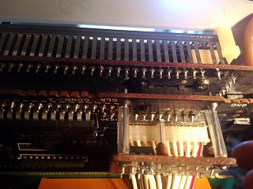
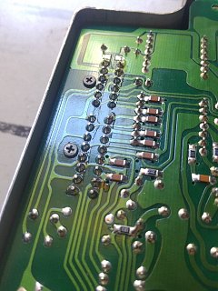

-
a couple of months ago I re-soldered a lot of the important connections on the dash itself thinking there were cracked solder joints in there. I had some success, for a couple of days I had no problems with the dash flickering or gauges reading incorrectly but eventually the dash started to flicker again and my sub gauges would show bad readings . Now that I have less trust in my cooling and oil pressure systems than I did before I tore the engine apart I want to know constantly what my coolant temps and oil pressures are but I want to keep the digital dash. I feel the problem lies in the black connector behind the dash that transfers all the data from the ECU to the digital dash unit. Has anyone had any success tearing that unit apart and manually splicing all the wires together?
The pictures I uploaded show my problem. After running for a bit the subgauges enter a position where coolant and oil pressure read zero and voltage reads 16. When I press on the dash (about where that black connector is behind the dash) the subgauges return to where (hopefully) my correct readings are.
alternatively, if anyone has my problem and has solved it, i would love to know what you did. '85 2+0 Turbo -
I just realized I posted this in performance. Is there any way this can be moved to repairs?'85 2+0 Turbo -
Moved as requested. I would look at the terminals in that connector (both sides) with a magnification lens or a cell phone camera and see if any of them are damaged or loose.
I would also suspect the brown pcba mounted connector that the black connector pigtail harness splits off into. It's in that same area where you are pressing on.
84 AE/Shiro #683/Shiro #820/84 Turbo -
I had the exact same problem. Flickering, gauges fluctuating or zero, and things worked when I pressed on the top of the dash. I thought it was the back wiring or the back of the casing inside. I took the entire dash apart and checked everywhere. I noticed a few things bent over like they were crushed by the casing, and stood them back up. Checked all solder joints and a few that looked bad I redid them. Put it all back together and then opened up the power unit and redid the solder joints there. Then almost everything wet away immediately, and then after a day everything worked again perfectly. It's been working perfectly for about a year now.
So I did nothing with the back wires.
I suggest trying to resolder the power unit again, then take aim at the components inside the dash. I wish I had been more aware and methodical of what I was doing so I could help others more, but I wasn't.
Hope this helps and gives you encouragement that a solution may be possible. -
Thanks for the response. Do you recall the extent to which you took apart the dash? I know there are boards stacked on top of each other in the unit, did you disassemble the stack and look through each board? I didn't do that, maybe the problem lies in there.
At this point I'm convinced the reason that pushing on the dash stops the flickering and bad readings is because there is a separated solder joint somewhere in there that loses continuity as the dash warms up or like you said some components crushed by the casing. I've desoldered and resoldered the power unit three times now, I'd hope that wouldn't be the issue but I'll check again just in case.'85 2+0 Turbo -
I've taken them apart, on a couple occasions. I have one here at my shop that is mostly disassembled. I purchased it from another board member but it is too corroded to use.
DD1.jpg
DD2.jpg
I'd take a look at the solder joints that the red arrow is pointing to.
84 AE/Shiro #683/Shiro #820/84 Turbo -
I didn't take about the two boards, however I did see several components in there that were suspect and that was my next try if I didn't fix it.
Here are some photos of what I remember doing. I think I did more that this too. I also bent everything back that was bent over from being crushed and I think resoldered their joints. I wish I had taken notes of what I did.
 

Copyright © 2006–. All rights reserved. Privacy Policy